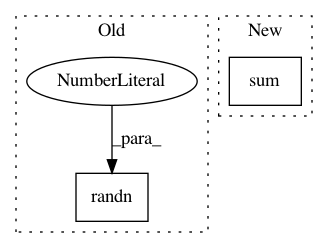

8a0ae18821895cfe49ea136643f3fcc423b00577,test/functions/test_inv_quad_log_det.py,TestInvQuadLogDetBatch,test_inv_quad_only_many_vectors,#TestInvQuadLogDetBatch#,167
Before Change
self.assertTrue(approx_equal(res.data, actual.data, epsilon=1e-1))
// Backward
inv_quad_grad_output = torch.randn(2)
actual.backward(gradient=inv_quad_grad_output)
res.backward(gradient=inv_quad_grad_output)
self.assertTrue(approx_equal(self.mats_var_clone.grad.data, self.mats_var.grad.data, epsilon=1e-1))
After Change
def test_inv_quad_only_many_vectors(self):
// Forward pass
res = NonLazyVariable(self.mats_var).inv_quad(self.vecs_var).sum()
actual = (
torch.cat([self.mats_var_clone[0].inverse().unsqueeze(0), self.mats_var_clone[1].inverse().unsqueeze(0)])
.matmul(self.vecs_var_clone)
.mul(self.vecs_var_clone)
In pattern: SUPERPATTERN
Frequency: 4
Non-data size: 2
Instances
Project Name: cornellius-gp/gpytorch
Commit Name: 8a0ae18821895cfe49ea136643f3fcc423b00577
Time: 2018-06-29
Author: gardner.jake@gmail.com
File Name: test/functions/test_inv_quad_log_det.py
Class Name: TestInvQuadLogDetBatch
Method Name: test_inv_quad_only_many_vectors
Project Name: cornellius-gp/gpytorch
Commit Name: 020d3d6dfa1bbcc13f7f7f0a833f57bb2cc8ef9d
Time: 2018-07-03
Author: balandat@fb.com
File Name: test/functions/test_inv_quad_log_det.py
Class Name: TestInvQuadLogDetBatch
Method Name: test_inv_quad_only_many_vectors
Project Name: Microsoft/nni
Commit Name: bd7edf36a22813c89281adfd8aae29ee59851448
Time: 2020-05-18
Author: 38930155+chicm-ms@users.noreply.github.com
File Name: src/sdk/pynni/tests/test_model_speedup.py
Class Name: SpeedupTestCase
Method Name: test_speedup_bigmodel
Project Name: SPFlow/SPFlow
Commit Name: 57d5ab96afe665f5e4c98e3af674d28b4b7fa547
Time: 2018-06-14
Author: molina@cs.tu-darmstadt.de
File Name: src/spn/experiments/RandomSPNs/LearnRGSPN.py
Class Name:
Method Name: Make_SPN_from_RegionGraph